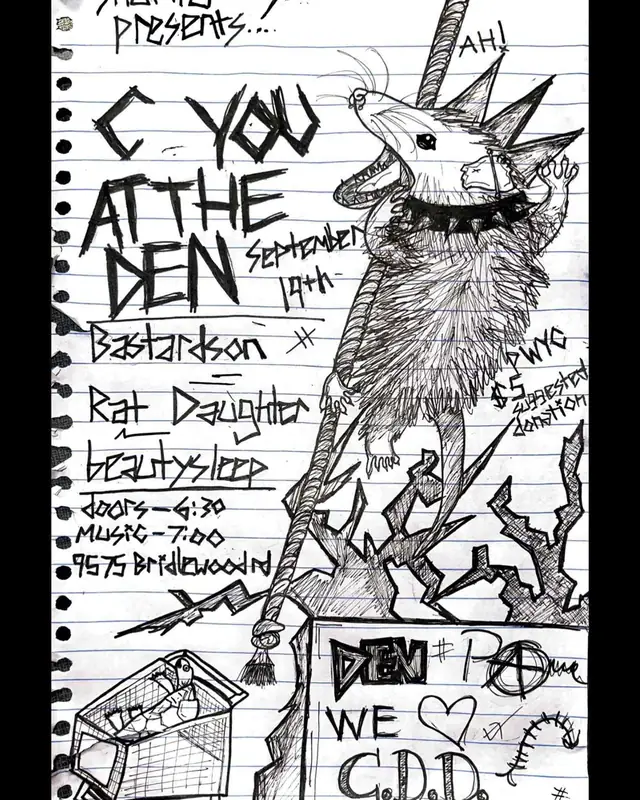

Bastard Son
pcola local4 shows logged
on the record since July 2026, first seen at beulah den on a bill with spidershed and caca del diablo.
next gig Sep 19 · Beulah Den →played atbeulah den
upcoming
- 19Sep 2026Bastard Son, Rat Daughter, beautysleepbeulah den
- 9Oct 2026Punk-or-Treat III, Friendly Spectres, Ihatesundays, Mother's Milk, Bastard Son, The Snatches, Larrybetty's on belmont
- 15Oct 2026Lesion, Bastard Son, Hayweather, Beautysleep, 7.7 PNXbetty's
flyer wall
 Oct 15, 2026 · betty's
Oct 15, 2026 · betty's Oct 9, 2026 · betty's on belmont
Oct 9, 2026 · betty's on belmont
Sep 19, 2026 · beulah den Jul 30, 2026 · beulah den
Jul 30, 2026 · beulah denpast shows
- 2026
- 30Jul 2026Spidershed, Bastard Son, Caca del Diablobeulah den
shared bills with
beautysleep ×27.7 pnxcaca del diablofriendly spectreshayweatherihatesundayslarrylesionmother's milkpunk-or-treat iiirat daughterspidershed
act pages are built automatically from the show archive, so something may be off: a misspelled name, a missing link, the wrong type, or a bad local/touring call. no disrespect meant. wrong on any of that, or want a listen link (youtube or bandcamp) or live footage added? send it in.